Configure IDE Project Settings ¶
This section provides guidance on configuring the IDE project settings to enhance the development workflow and ensure alignment with project requirements.
1. Replace HAL1 drivers by HAL2 ¶
Within duplicated project, replace the HAL1 drivers by HAL2 drivers.
HAL2 drivers Paths :
-
LL drivers’ path: “STM32Cube_SW_Package_H7P_2.0.0 \ stm32h7pxx_drivers \ ll”
-
HAL drivers’ path: “STM32Cube_SW_Package_H7P_2.0.0 \ stm32h7pxx_drivers \ hal”
-
DFP drivers path: “STM32Cube_SW_Package_H7P_2.0.0 \ stm32h7pxx_dfp”
2. Update device selection in the IDE project ¶
Select the appropriate device from the IDE’s database to ensure correct configuration in your project.
For a detailed demonstration on updating the device selection in the IDE project.

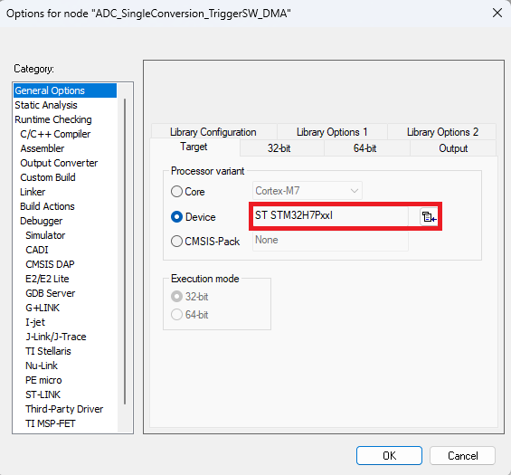
3. Update Linker, startup and configuration files ¶
-
Update
stm32h563xx_flash.icf,startup_stm32h563zitx.s,system_stm32h5xx.candstm32h5xx_hal_conf.h
|
Module name |
Initial HAL1 project |
Target HAL2 project |
|---|---|---|
|
Linker file |
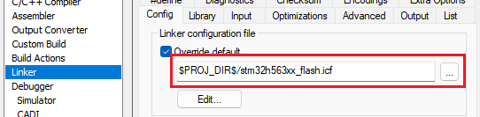 |
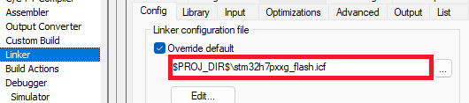 |
|
STARTUP |
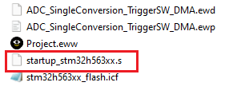 |
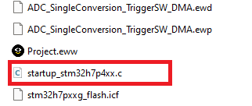 |
|
System |
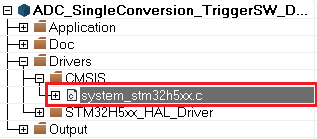 |
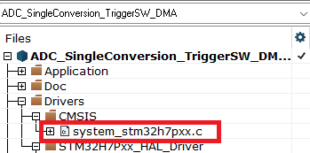 |
|
CMSIS Core |
$PROJ_DIR$/../../../../../../Drivers/CMSIS/Include 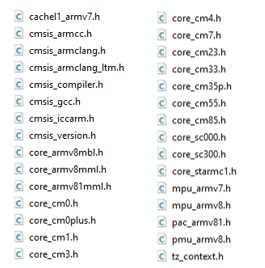 |
$PROJ_DIR$/../../../../../cmsis/CMSIS/Core/Include: It contains the collection of software components provided by ARM 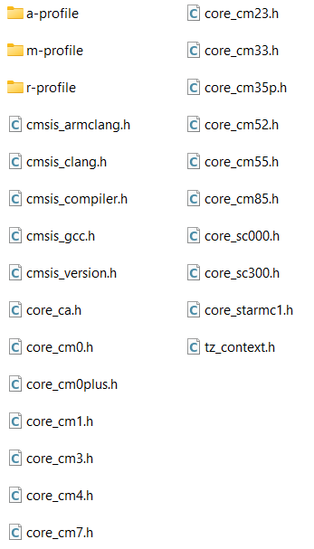 |
|
HAL conf.h |
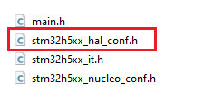 |
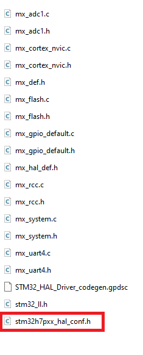 |


-
Exclude BSP folder from the project

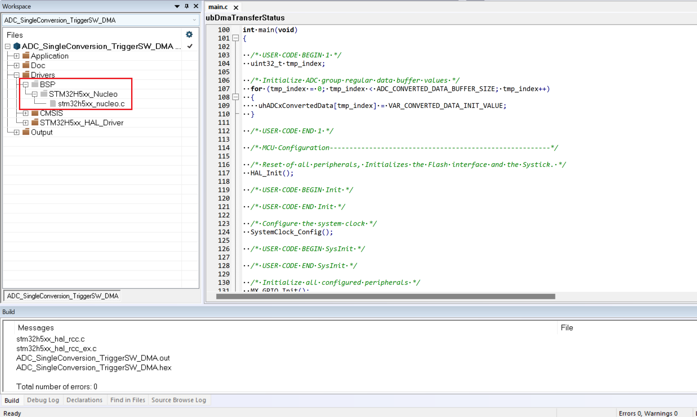
For more details, refer to Generated Linker, startup, system, hal conf, external env files and drivers
Replace central include HAL file ¶
Note
-
Replace #include
stm32h5xx_hal.hwith #includestm32_hal.has specified in Add a central include HAL file: stm32_hal.h. -
Remove #include
stm32h5xx_nucleo.hfrom main.h
|
Initial HAL1 project |
Target HAL2 project |
|---|---|
|
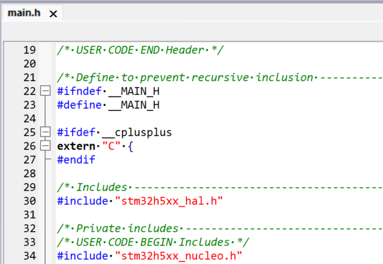 |
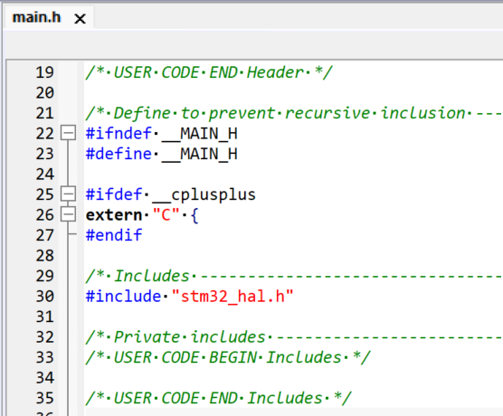 |


4. Update drivers inclusion path in the IDE project ¶
Update the necessary driver includes in your project directory.
|
Initial HAL1 project |
Target HAL2 project |
|---|---|
$PROJ_DIR$/../../../../../../Drivers/STM32H5xx_HAL_Driver/Inc
$PROJ_DIR$/../../../../../../Drivers/STM32H5xx_HAL_Driver/Inc/Legacy
|
$PROJ_DIR$/../../../../../stm32h7pxx_drivers/hal
$PROJ_DIR$/../../../../../stm32h7pxx_drivers/ll
Removed from HAL2
|
5. Update drivers source files selection in the IDE project ¶
Update the necessary driver source files in the IDE project with the ones generated by STM32CubeMX2.
|
Initial HAL1 project |
Target HAL2 project |
|---|---|
|
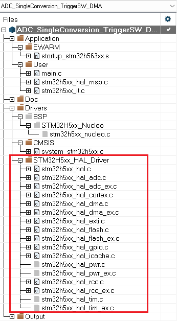 |
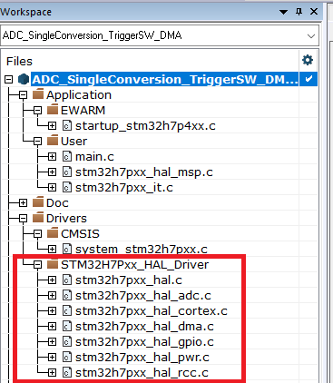 |


Replace the stm32h5xx files with stm32h7pxx files and ensure both header (.h) and source (.c) files are updated.
|
Module |
Initial project |
Migrated project |
|---|---|---|
|
GENERIC |
stm32h5xx_hal_def.h stm32h5xx_hal_conf.h stm32h5xx_hal.h stm32h5xx_hal.c |
stm32h7pxx_hal_def.h stm32h7pxx_hal_conf.h stm32h7pxx_hal.h stm32h7pxx_hal.c stm32_assert.h stm32_hal.h stm32h7pxx_hal_dbgmcu.c stm32h7pxx_hal_dbgmcu.h stm32h7pxx_hal_sbs.c stm32h7pxx_hal_sbs.h |
|
CORTEX |
stm32h5xx_hal_cortex.h stm32h5xx_hal_cortex.c
|
stm32h7pxx_hal_cortex.h stm32h7pxx_hal_cortex.c |
|
GPIO |
stm32h5xx_hal_gpio.h stm32h5xx_hal_gpio.c stm32h5xx_ll_gpio.h stm32h5xx_ll_lpgpio.h stm32h5xx_hal_gpio_ex.h
|
stm32h7pxx_hal_gpio.h stm32h7pxx_hal_gpio.c stm32h7pxx_ll_gpio.h stm32h7pxx_ll_lpgpio.h |
|
RCC |
stm32h5xx_hal_rcc.h stm32h5xx_hal_rcc.c stm32h5xx_ll_rcc.h stm32h5xx_hal_rcc_ex.h stm32h5xx_hal_rcc_ex.c
|
stm32h7pxx_hal_rcc.h stm32h7pxx_hal_rcc.c stm32h7pxx_ll_rcc.h |
|
DMA |
stm32h5xx_hal_dma.h stm32h5xx_hal_dma.c stm32h5xx_ll_dma.h stm32h5xx_hal_dma_ex.c stm32h5xx_hal_dma_ex.h
|
stm32h7pxx_hal_dma.h stm32h7pxx_hal_dma.c stm32h7pxx_ll_dma.h |
|
ICACHE |
stm32h5xx_hal_icache.h stm32h5xx_hal_icache.c stm32h5xx_ll_icache.h
|
stm32h7pxx_hal_icache.h stm32h7pxx_hal_icache.c stm32h7pxx_ll_icache.h |
|
ADC |
stm32h5xx_hal_adc.h stm32h5xx_hal_adc.c stm32h5xx_ll_adc.h stm32h5xx_hal_adc_ex.h stm32h5xx_hal_adc_ex.c
|
stm32h7pxx_hal_adc.h stm32h7pxx_hal_adc.c stm32h7pxx_ll_adc.h |
|
FLASH |
stm32h5xxx_hal_flash.h stm32h5xxx_hal_flash.c stm32h5xxx_hal_flash_ex.h stm32h5xxx_hal_flash_ex.c |
stm32h7pxx_hal_flash.h stm32h7pxx_hal_flash.c stm32h7pxx_ll_flash.c stm32h7pxx_hal_flash_itf.c stm32h7pxx_hal_flash_itf.h |
For more details, refer to Generated Linker, startup, system, hal conf, external env files and drivers
Important
-
The items highlighted in
Inline codehave been removed from HAL2 and all extended HAL files are merged inside the corresponding HAL files. -
The items marked in Bold have been added to HAL2.
6. Update Pre-Processor Defines for drivers in the IDE project ¶
Update pre-processor defines and keep STM32H7P64xx as pre-processor defines in generated project.

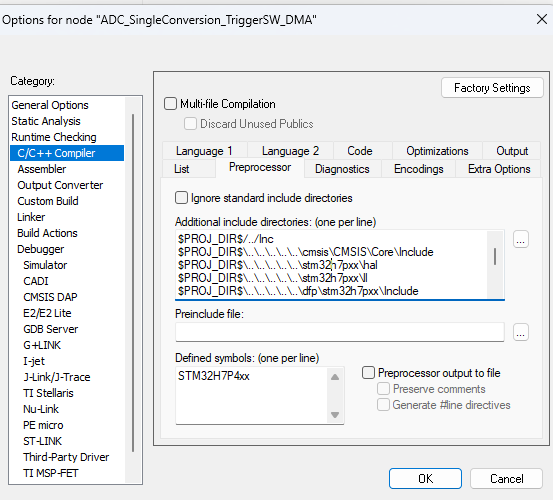
Next step: Execute the automatic detection script